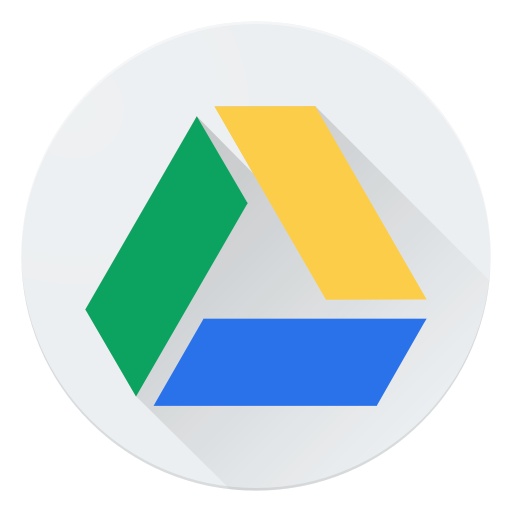

Найпопулярніші типи сайтів
Сьогодні важко уявити життя без Інтернету. Дехто з нас навіть розпочинає свій день за чашкою кави, переглядаючи в той же час новини на улюбленому сайті чи шукаючи нове взуття в інтернет-магазині. Онлайн-простір став невід'ємною частиною й ділового життя. Якщо ви володієте бізнесом або лише збираєтесь його створити, сайт може допомогти в розвитку вашого бренду та збільшенні популярності. Однак, перед тим, як розпочати розробку власного сайту, не зайвим буде ознайомитися з їх видами, щоб ви точно знали, що вам потрібно. Ми визначили 6 типів сайтів, які зараз є найбільш популярними.
1. Сайт-візитка
Це найпростіший сайт, який не містить багато сторінок. Зазвичай їх кількість не перевищує 10. Найчастіше з кожної сторінки відразу можна перейти на будь-яку іншу. Вони призначені для короткого опису фірми, знайомства користувача з послугами та для надання контактної інформації.
2. Сайт компанії з каталогом продукції
За своєю суттю — це теж сайт-візитка. Проте, як можна здогадатися з назви, він містить окрім короткої інформації ще каталог всіх послуг, що надаються компанією. Іноді подібний список може бути дуже великим. В такому випадку на сайтах роблять зручну систему навігації з категоріями, фільтрами та групуванням. Такі сайти зазвичай залучають клієнтів набагато ефективніше, ніж сайт-візитка.
3. Інтернет-магазини
На сайтах такого типу надається список продукції, яку користувач може замовити там онлайн. Оскільки популярність інтернету в наш час дуже висока, інтернет-магазини набувають все більшого поширення й вже зайняли свою зручну нішу. З інтернет-магазинів дуже легко почати отримувати дохід, проте, слід пам'ятати, що вам знадобиться чимало часу на обробку, доставку замовлень і т.д.
4. Новинні та пошукові портали
Подібними сайтами ми користуємося щодня, коли хочемо дізнатися щось нове або бути в курсі останніх новин. Як правило, такі сайти є дуже великими й, відповідно, вимагають багато часу на розробку та просування. Зазвичай, це комерційні проекти.
5. Інформаційні портали
Це сайти, на яких зібрані різного роду статті на будь-які теми. Сайт може містити безліч інформаційних статей на всі тематики або ж декілька та розповідати про новинки в світі технологій. Також вони можуть об'єднувати та структурувати в собі інформацію, зібрану з інших ресурсів. Найчастіше інформаційні портали існують за рахунок реклами у вигляді банерів або спонсорів.
6. Веб-системи обліку товарів, бухгалтерії
Подібні сайти призначені виключно для внутрішнього використання будь-якою фірмою й доступ до них для звичайних користувачів закритий. Вони дуже важливі для структурування даних та використовуються зазвичай дуже великими компаніями, які мають безліч філій в різних містах. Такі сайти містять досить багато інформації й коштують дуже дорого, проте їх зручність в рази окупає ціну.